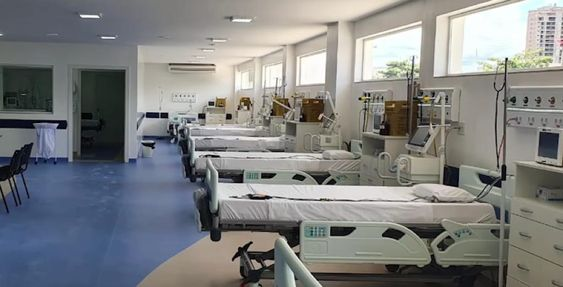

Sobre Nosso Pronto Atendimento
Pronto Atendimento
O Pronto Atendimento do Hospital +VIDA busca atendimento com qualidade, conforto e segurança, oferecendo a seus clientes atendimento de urgência e emergência 24 horas.
A estrutura física é composta por:
- 02 Sala de Acolhimento e Classificação de Risco
- 01 Posto de Enfermagem
- 04 Sala Vermelha equipada e destinada ao atendimento de pacientes em emergências clínicas e cardiológicas
- 04 Sala Verde
- 05 Sala de pequenos procedimentos
- 03 Sala Amarela
- 03 Sala Laranja
- 02 Sala de Dor Toráxica
- 03 Fármacias
- 02 Agência Tranfunsional
- PARTICULAR
- PARTICULAR ESPECIAL/PACOTE
- PREMIUM SAÚDE
- SUS
- UNIMED
Acolhimento e Classificação de Risco
O Pronto Atendimento do hospital +VIDA trabalha com o Acolhimento e Classificação de Risco de acordo com o Protocolo de Manchester. Cada caso é determinada por uma equipe qualificada de enfermeiros, que a partir do Protocolo de Manchester verifica os sinais vitais, colhe informações importantes da história do paciente e determina o seu grau de risco de forma individualizada. A Classificação de Risco pelo Protocolo de Manchester possibilita uma intervenção imediata, onde o tempo é determinante no tratamento e prognóstico do paciente. O procedimento realizado de acordo com critérios clínicos, e não por ordem de chegada, aumentando a eficácia do atendimento, com redução do tempo de espera para os pacientes de maior gravidade. O Pronto Atendimento mantém uma equipe de cardiologistas 24 horas, o que permite a realização de atendimento médico sem hora marcada para casos com os mais variados graus de complexidade e gravidade, com possibilidade de realização de exames, medicações e acionamento de equipes de retaguarda.
Atendimentos mais frequentes
As principais queixas que motivam os atendimentos cardiológicos nas Unidades de Pronto-atendimento são dor torácica (dor no peito), dispneia (falta de ar), palpitações ou taquicardia ou alterações da frequência cardíaca, síncope (desmaio com perda da consciência e queda) ou pré-síncope (quase desmaio) ou lipotímia (sensação de que pode vir a desmaiar, escurecimento da visão, tonturas, alterações do equilíbrio), e alterações da pressão arterial (hipertensão ou elevação e hipotensão ou queda). Todas merecem uma avaliação, mas principalmente se forem de instalação súbita ou muito intensas, devem ser vistas em pronto-socorro o quanto antes, qualquer que seja o perfil de risco do paciente (inclusive jovens, mulheres, pessoas sem fatores de risco). Pacientes com maior perfil de risco para doença cardiovascular também devem procurar uma avaliação mais rápida, mesmo que os sintomas sejam menos agudos ou mais brandos.
Pacientes de maior risco
Alguns pacientes apresentam maior risco de vida e devem ser diagnosticados com a maior brevidade possível: diabéticos, idosos, portadores de dois ou mais fatores de risco para doença aterosclerótica (diabetes, hipertensão arterial, tabagismo, elevação do colesterol, história familiar de infarto ou morte súbita, usuários de cocaína ou outras drogas estimulantes, obesidade, sedentarismo), ou que já tenham tido alguma doença relacionada à aterosclerose (como acidente vascular cerebral, isquemia cerebral transitória, doença arterial obstrutiva periférica, doença das carótidas, doença da aorta), ou que já tenham alguma cardiopatia de base prévia (infarto, angina, doença coronariana diagnosticada por exames, angioplastia, stent cardíaco, cirurgia cardíaca, insuficiência cardíaca, arritmias cardíacas, doenças das válvulas cardíacas).